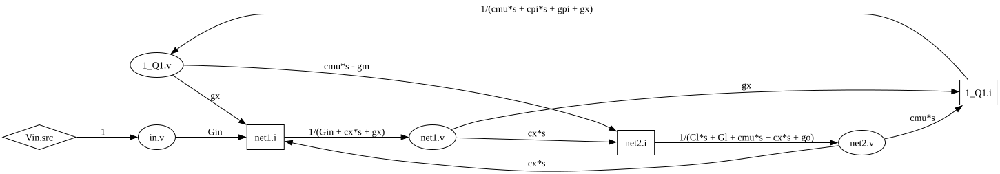

从 SLiCAP 网表到信号流图的第一阶段原型
本报告用于说明这段时间的工作：先解释论文中的电路复杂度约简方法，再重点展示当前代码如何读取 .cir 网表、复用 SLiCAP 展平小信号模型、构建信号流图、输出审计报告与 SVG 图。

1. 项目要解决什么问题
我们的长期目标是做一个初步可运行的模拟电路符号化简原型：读取电路网表，得到线性化小信号网络，把网络转换成信号流图，然后基于图结构进行化简，最终输出化简后的传递函数和零极点结果。
对模拟电路来说，直接从 MNA 方程推导完整符号传递函数很容易出现表达式爆炸。论文的方法不是先展开一个巨大的代数式再删项，而是先把电路转换成信号流图，在图上识别哪些支路、节点、频率相关项对目标响应影响较小，再用误差控制的方式逐步简化。
当前工作的定位
- SLiCAP 负责可靠地读取网表、解析模型、展开层次和器件小信号等效。
- 我们的代码把 SLiCAP 展平后的网络 N 转换成信号流图 G。
- 当前实现重点是构图正确性、可审计性和可视化，还没有进入完整的误差控制化简。
- demo_2 是一个共射放大器例子，适合解释从网表到图的完整调用链。
2. 论文的整体算法流程
论文中的复杂度约简算法可以拆成九个阶段。我们的原型目前主要实现第 1 步到第 3 步，尤其是第 3 步 N -> G。


论文第 3 步内部细分
| 步骤 | 含义 | 我们当前实现情况 |
|---|---|---|
| 3.1 替换网络元件 | 把 R/C/g/V/I 等元件变成图上的有向边。 | 已实现主要线性元件和四类受控源的初步 stamp。 |
| 3.2 冗余删除与一致性修正 | 删除不必要的自环、处理电压源约束、避免方程不一致。 | 已实现接地 AC 电压源、零值电压源 alias、自环吸收和审计记录；浮置电压源仍需进一步完善。 |
| 3.3 meta-edge 合并 | 把同一对顶点之间的多条边合并成一条总边，并按频率阶次分组。 | 已实现 lump_meta_edges() 和 order_partitions。 |

为什么论文要构建信号流图
1. 避免直接展开大表达式
完整符号传递函数会快速膨胀。SFG 保留“变量之间的因果边”，让化简先发生在图上，而不是先生成一个巨大多项式。
2. 方便做拓扑化简
图上的边、节点、回路、开环根更容易被定位。论文后续的 root observability、ranking 和 graph operation 都依赖这个结构。
3. 支持误差控制
化简不是随意删项，而是结合数值参考性能、根聚类和误差规格，判断某个图操作是否可接受。
为什么把一个电路节点拆成两个顶点
论文把一个电路节点 n 拆成 n.v 和 n.i，本质上不是把电路物理节点真的拆开，而是把一个节点方程中的两类变量分开表示：n.v 是节点电压顶点，n.i 是节点电流顶点。
# 其他节点电压先形成流入/流出 n 的电流贡献
i_n = Y_nnv_n + Y_n1v_1 + Y_n2v_2 + ...
# 进一步整理为电流变量到电压变量的关系
v_n = Z_nni_n + 其他节点电压的贡献
Z_nn = 1 / Y_nn这里 Y_nn 是节点自导纳，Y_nk 是其他节点电压通过支路对节点 n 产生的电流贡献。拆分之后，n.i -> n.v 表示“节点电流通过等效阻抗形成节点电压”，m.v -> n.i 表示“节点 m 的电压通过某个导纳支路，对节点 n 的 KCL 电流产生贡献”。
与基尔霍夫电流定律的关系
对普通节点 n，KCL 可以写成“所有流入节点 n 的电流之和为 0”。如果把其他节点电压对节点 n 的电流贡献整理出来，就可以把节点方程拆成两个方向明确的关系：
Y_nv_n = i_n
v_n = (1 / Y_n)i_n因此 n.v 和 n.i 的关系，其实就是把 KCL 方程拆成：
其他电压变量 -> 节点电流变量 -> 节点电压变量这就是 SFG 和基尔霍夫电流定律的内在联系。它不会改变电路方程，只是把 MNA 或节点分析中的代数关系改写成图上的有向边。
信号流图中的两类边
| 边类型 | 数学意义 | 电路意义 |
|---|---|---|
| n.i -> n.v | v_n = Z_n i_n | 同一节点内部的自阻抗边，其中 Z_n = 1/Y_n，Y_n 是该节点总自导纳。 |
| m.v -> n.i | i_n += A v_m | 不同节点之间的导纳、跨导或电容耦合项，表示其他节点电压对节点 n 的 KCL 贡献。 |
所以论文中的图结构不是任意规定的，而是直接来自 KCL 的整理形式：跨节点元件先把电压贡献送入某个节点的 KCL 电流变量，即 m.v -> n.i；本节点的总自导纳再取倒数，把电流变量转换成电压变量，即 n.i -> n.v。
一个导纳支路如何变成图边
设导纳 Y 接在节点 a 和 b 之间。它在节点方程中会产生两个方向的交叉贡献：
b.v -> a.i : Y
a.v -> b.i : Y同时，节点 a 和 b 各自的自导纳会被合并到 a.i -> a.v、b.i -> b.v 的自阻抗边中。这样一个普通支路既保留了节点间耦合，也保留了节点自身负载。
这样做会不会更复杂
初始图确实更大：原来一个电路节点会变成两个顶点，边数也会增加。但论文的目标不是让初始表示最小，而是让后续化简有明确的操作对象。
在完整符号传递函数里，一个电容耦合项可能展开成很多代数项；在 SFG 中，它可能仍然是一条边，例如 net2.v -> net1.i : cx*s。后续算法可以直接评估“删除这条边是否超过误差规格”，这比在巨大多项式里删项更可控。
图结构的优势
- 局部性强：一条边通常对应一个明确元件或一组并联合并后的 meta-edge。
- 可排序：可以根据频率阶次、候选根、数值误差贡献给边排序。
- 可删除：化简操作可以落实为删边、合并边、删节点等图操作。
- 可追踪：每个图操作都能追溯回原电路中的某个元件或参数。
- 适合误差控制：删除某条边后可以数值比较参考响应和简化响应。
理想电压源类元件为什么要特别小心
普通电阻、电容、跨导源大多可以写成 i = Yv，天然适合生成 v -> i 边。但理想电压源、VCVS 和 CCVS 给出的是电压约束：
v_a - v_b = V_s它们不能直接写成导纳关系，也会引入未知支路电流。如果是接地输入电压源，可以直接驱动一个电压顶点；如果是小信号为零的供电源，可以做 AC ground 或节点合并；如果是浮置电压源或电压源链，就需要 supernode、MNA 辅助电流变量或论文中的 consistency correction。
这一步对后续算法的意义
节点拆分和两类边的设计，让后续算法可以直接在图上操作“变量关系”，而不是在完整传递函数展开后再处理多项式项。meta-edge 合并、order partition、候选开环根识别和误差控制删边，都依赖这种结构化表示。
因此，SFG 的初始规模变大并不是缺点，而是为了换取后续化简过程中的可定位、可排序、可验证。
构建 SFG 的基本方法
| 电路对象 | 图上的表达 |
|---|---|
| 普通电路节点 n | 拆成 n.v 和 n.i 两类变量。前者是节点电压，后者是 KCL 中的等效注入电流。 |
| R/C 等双端支路 | 先转成导纳 Y(s)，再产生节点间的导纳边，以及从电流变量到电压变量的阻抗边。 |
| 独立电压源 | 如果一端接地且作为输入源，直接驱动对应 *.v；如果小信号为 0，则进行 AC ground 或节点合并。 |
| VCCS / MOS gm | 输出是电流，所以从控制电压顶点连到输出节点的 *.i。 |
| VCVS / CCVS | 输出是电压约束，所以边直接连到输出正端的 *.v，并需要做电压源链一致性修正。 |
为什么要按这种方式构图
这种构图方法不是为了画图好看，而是为了让每条边都对应一个明确的电路方程项。导纳边对应 KCL 中“电压导致电流”的项，阻抗边对应“注入电流导致节点电压”的局部关系，受控源边对应控制变量对输出变量的贡献。
这样做的好处是后续可以在图上做局部操作：合并同起点同终点的边，按 s 的阶次拆分 meta-edge，识别某条边引入的候选根，再判断删除或近似这条边会给整体响应带来多少误差。

受控源图化的关键判断
四类受控源的差别不在于“是不是受控”，而在于输出变量是电流还是电压。输出为电流时，边进入输出节点的 *.i；输出为电压时，边进入输出正端的 *.v。
控制量也需要区分：电压控制源从控制端电压顶点 *.v 出发；电流控制源需要先定义辅助电流变量，再从该电流变量出发。否则控制支路方向一旦约定错误，图上的符号也会反。
同节点自导纳吸收到自阻抗的电路含义
在节点 n 上，某些元件会产生从 n.v 到 n.i 的自反馈边，含义是“节点电压自身通过某个导纳产生节点电流”。例如接地电容给出 i = sC · v，接地电导给出 i = G · v。
如果图里同时存在 n.i -> n.v 的阻抗边和 n.v -> n.i 的自导纳边，就形成同一节点内部的代数自环。论文中的冗余删除会把这个自环直接求解掉，把局部导纳并入等效阻抗。代码中的形式是：
Z_new = 1 / (1 / Z_old - Y_loop)符号中的正负号由 stamp 约定决定。直观上，这一步等价于在 KCL 中先把节点自身的并联导纳合并成总导纳，再用总导纳的倒数作为 n.i -> n.v 的等效阻抗边。
一致性修正为什么必要
理想电压源不能像电阻那样写成 I = YV，它给出的是电压约束。如果机械地把每个电压源都当成普通支路 stamp，就会漏掉电压源支路电流，或者让两个本应相等的小信号节点被错误地当成独立节点。
例如 VDD VDD 0 V value=0 在小信号分析里应当是 AC ground。如果不把 VDD 合并到 0，负载电阻 Rl VDD net2 会被误认为连接到一个悬空节点，导致 net2 的 KCL 缺少正确的 Gl 负载项。
再例如浮置输入源 Vin a b V value={Vin}，只画 b.v -> a.v 和 Vin.src -> a.v 还不够，因为电压源中的未知电流仍然参与 a、b 两个节点的 KCL。后续需要用 MNA 辅助电流变量或 supernode 才能严格闭合方程。
反向串联电压源的典型问题
论文 Fig.4 展示了两个电压源反向串联时的图不一致问题。若直接逐个套用 VCVS stamp，会把多个电压约束都指向同一个电压顶点，表面上得到了一组图边，但这些边没有统一处理电压源链的方向关系。
后果是图方程可能与原电路约束不等价：有的节点电压被重复约束，有的中间电压源支路电流没有进入 KCL，最终会影响传递函数符号和极零点位置。因此论文强调冗余删除后还要做 consistency correction。

Fig.4 中一致性修正的做法
图中两个受控电压源反向串联。原始电路给出的不是“两个贡献相加到同一个节点”，而是两个独立的电压约束：
V_v - V_u = A(V_a - V_b)
V_v - V_w = B(V_c - V_d)如果机械 stamp，两组边都会指向 v.v，图方程会被误读为：
V_v = V_u + A(V_a - V_b)
+ V_w + B(V_c - V_d) # 错误修正后的等价图方程
一致性修正会先选定电压源链方向，例如沿 u -> v -> w 写方程。第一个源仍然定义 V_v，第二个源改写为定义 V_w：
V_v = V_u + A(V_a - V_b)
V_w = V_v - B(V_c - V_d)对应的 SFG 边就从“都指向 v.v”变成“第一组指向 v.v，第二组指向 w.v”。这样每个电压顶点只由一个一致方向的约束定义，图方程才和原电路约束等价。
4. 我们目前已经完成的能力
已实现
- 复用 SLiCAP 原有词法、语法分析和模型展开能力，不重新造网表解析器。
- 把 SLiCAP 的电路对象复制成稳定的中间结构 LinearNetwork。
- 根据展平后的 R/C/g/V/I 等线性元件构建 SFG。
- 处理接地独立 AC 电压源：只保留电压顶点，不保留无意义的输入端电流顶点。
- 处理小信号为 0 的非输入电压源：进行 AC ground 或节点 alias。
- 记录 dropped edge、self-loop absorption、voltage alias、meta-edge lump 等审计事件。
- 输出 DOT、SVG、构图审计报告和 meta-edge 报告。
尚未实现
- 完整传递函数求解与零极点自动输出。
- 论文第 4 步以后的数值参考性能、root clustering、error-controlled simplification。
- 浮置理想电压源的严格 KCL 处理。目前记录电压约束，但后续应选择 MNA 辅助电流变量或 supernode 方法。
- 对所有复杂 SLiCAP 器件模型的完备覆盖测试。
5. demo_2 的完整工作流程
demo_2 使用一个带 BJT 小信号模型的共射放大器网表。运行 demo.py 后，程序会完成网表展平、SFG 构建、报告导出和 SVG 渲染。
demo_2 网表
mycircuit
VDD VDD 0 V dc={VDD} value=0
Vin in 0 V value={Vin}
Rin in net1 R value={1/Gin}
Rl VDD net2 R value={1/Gl}
Q1 net2 net1 0 0 QV gm={gm} go={go}
gpi={gpi} cpi={cpi} cbx={cx}
cbc={cmu} rb={1/gx}
C1 net2 0 C value={Cl}
.source Vin
.detector V_net2
.enddemo.py 核心调用
from SLiCAP import netlist_to_signal_flow_graph
base_dir = r"C:\pr\learning\college\else\sitp_2\SFG methods\demo_2"
cir_path = os.path.join(base_dir, "circuit.cir")
net, graph = netlist_to_signal_flow_graph(cir_path)
print(net.summary())
print(graph.summary())
dot = graph.to_dot(style="default")
svg = graph.render_dot(
os.path.join(base_dir, "sfg_default"),
format="svg",
style="default",
)SLiCAP 读取并展平网表
netlist_to_signal_flow_graph() 先调用 flatten_netlist()。后者复用 SLiCAP 的 _checkCircuit()，完成网表第一行标题读取、注释处理、模型参数检查、器件模型展开和层次展平。
生成中间网络模型 N
network_from_circuit() 把 SLiCAP 内部 circuit 对象复制成 LinearNetwork。这样后续构图代码不直接依赖 SLiCAP 内部可变对象。
预处理电压源和节点
build_signal_flow_graph() 会先识别 .source Vin、零值电压源和接地 AC 电压源。demo_2 中 VDD value=0 在小信号下等效 AC ground，因此 VDD -> 0 被记录为 voltage alias；Vin in 0 是输入电压源，因此 in 只保留 in.v。
逐元件 stamp 到 SFG
_stamp_element() 根据元件模型调用不同 helper。电阻和电容进入 _stamp_bilateral_branch()，压控电流源进入 _stamp_vccs()，电压源进入 _store_voltage_source()。每条边都通过 add_contribution() 进入图结构。
冗余删除与 meta-edge 合并
eliminate_self_loops() 把同节点自导纳吸收到自阻抗表达式中，lump_meta_edges() 把相同起点和终点的边合并，并计算 order_partitions。这一步对应论文第 3.2 和 3.3。
导出图和报告
to_dot() 输出 Graphviz DOT 文本，render_dot() 调用 Graphviz 生成 SVG，audit_report() 和 meta_edge_report() 输出可检查的 Markdown 报告。
6. SLiCAPsfg.py 的代码结构
SLiCAPsfg.py 的职责很明确：输入已经展平的 LinearNetwork，输出 SignalFlowGraph。它不负责网表语法解析，也不负责后续完整的误差控制化简。
核心数据结构
| 名称 | 作用 |
|---|---|
| GraphVertex | 图中的顶点，例如 net2.v、net2.i、Vin.src。 |
| GraphContribution | 单个元件贡献的一条原始边，保留 refdes、kind 和 symbolic value。 |
| MetaEdge | 多个原始 contribution 合并后的总边，用于后续频率阶次分析。 |
| SourceDrive | 记录独立源如何驱动图中的电压或电流顶点。 |
| VoltageConstraint | 记录浮置电压源或电压型约束，后续可扩展为 MNA 或 supernode 处理。 |
| DeferredElement | 记录暂时无法 stamp 的元件，例如电流控制源找不到控制支路引用。 |
| GraphAuditEvent | 记录构图过程中的创建、丢弃、合并、警告等事件，便于排错和写报告。 |
| SignalFlowGraph | 最终图对象，包含 vertices、contributions、meta_edges、warnings 和导出方法。 |
主入口函数
| 函数 | 作用 |
|---|---|
| netlist_to_signal_flow_graph() | 最高层入口：输入 .cir 路径，返回 (net, graph)。 |
| build_signal_flow_graph() | 把 LinearNetwork 转成 SignalFlowGraph，负责节点预处理、stamp、自环消除和 meta-edge 合并。 |
| _stamp_element() | 元件分发器，根据模型类型调用对应 stamp 函数。 |
| _voltage_source_aliases() | 识别小信号为 0 的非输入电压源，做 AC ground 或节点合并。 |
| _voltage_driven_nodes() | 识别一端接地的输入电压源，使该节点只创建电压顶点。 |
SignalFlowGraph 的关键方法
| 方法 | 当前用途 | 报告中可以怎么讲 |
|---|---|---|
| add_vertex_pair() | 给普通节点创建 .v 和 .i 顶点。 | 把一个电路节点拆成“电压变量”和“电流平衡变量”。 |
| add_source_vertex() | 给独立源创建源信号顶点。 | 输入信号不是普通电路节点，而是图中的已知激励。 |
| add_aux_current_vertex() | 为 F/H 类型电流控制源创建辅助电流变量。 | 电流控制源必须知道控制支路方向，否则符号会反。 |
| add_contribution() | 添加元件贡献边，同时检查顶点是否存在。 | 这一步避免图中出现指向不存在变量的隐性错误。 |
| eliminate_self_loops() | 把自导纳环吸收到等效阻抗边中。 | 对应论文中的冗余删除，让图更接近可分析形式。 |
| lump_meta_edges() | 合并同起点同终点边，计算总表达式和频率阶次。 | 这是后续 open-loop root、边排序和化简的基础。 |
| to_dot() | 输出 DOT 文本。 | 便于调试，也便于用 Graphviz 渲染。 |
| render_dot() | 调用 Python graphviz 包生成 SVG/PNG。 | 把抽象图转成可展示图片。 |
| audit_report() | 输出构图过程审计。 | 说明每条边为什么存在或为什么被丢弃。 |
| meta_edge_report() | 输出合并后的边、阶次分区和候选根。 | 连接到论文后续 root-based simplification。 |
元件 stamp 的基本规则
- R/C 等双端支路先转成导纳 Y，再给两端 current vertex 添加交叉导纳贡献。
- 普通节点还会有 n.i -> n.v 的阻抗边，相当于把 KCL 电流变量转换成节点电压变量。
- VCCS 的输出是电流，因此边连到输出节点的 .i。
- VCVS/CCVS 的输出是电压约束，因此边连到输出正端的 .v。
- CCCS/CCVS 需要辅助电流变量，方向必须来自控制支路引用。
受控源处理原则
| 类型 | 控制量 | 输出量 | 连边位置 |
|---|---|---|---|
| VCCS | 电压 | 电流 | *.v -> *.i |
| VCVS | 电压 | 电压 | *.v -> *.v |
| CCCS | 电流 | 电流 | I_ref -> *.i |
| CCVS | 电流 | 电压 | I_ref -> *.v |
7. demo_2 输出结果怎么解读
运行 demo_2 后，最重要的结果不是只有 SVG 图，还包括构图审计和 meta-edge 报告。这两个报告能解释“图为什么长这样”。
Graph Summary
| vertices | 8 |
| contributions | 21 |
| meta_edges | 11 |
| source_drives | 1 |
| voltage_constraints | 0 |
| deferred_elements | 0 |
| dropped_contributions | 2 |

终端输出摘要
=== Network Summary ===
Title: mycircuit
Summary: {'elements': 14, 'nodes': 6, 'active_nodes': 5,
'dep_vars': 9, 'indep_vars': 2, 'controlled': 4,
'params': 12, 'par_defs': 0}
Source: ['Vin', None]
Detector: ['V_net2', None]
=== Graph Summary ===
{'vertices': 8, 'contributions': 21, 'meta_edges': 11,
'source_drives': 1, 'voltage_constraints': 0,
'deferred_elements': 0, 'dropped_contributions': 2,
'audit_events': 53}展平元件如何理解
| 终端输出 | 含义 |
|---|---|
| elements = 14 | 原始网表里的 QV 晶体管模型被 SLiCAP 展开成多个小信号元件，因此元素数量增加。 |
| Cbc_Q1, Cbx_Q1, Cpi_Q1 | 对应晶体管模型中的结电容和跨接电容，后续会产生 sC 形式的导纳边。 |
| Gm_Q1, Go_Q1, Gpi_Q1 | 对应受控源、输出电导和输入电导；其中 Gm_Q1 最终形成 -gm 的跨导边。 |
| Rb_Q1 value=1/gx | 基区串联电阻被转成等效导纳 gx，连接 net1 和内部节点 1_Q1。 |
| VDD value=0 | 小信号下被当作 AC ground，因此 Rl 对输出节点贡献 Gl 负载。 |
| Vin value=Vin | 由 .source Vin 指定为输入源，最终生成 Vin.src -> in.v。 |
DOT 输出对应的图结构
终端中的 DOT 文本就是 SVG 的源描述。demo_2 的核心边可以概括为：输入源驱动 in.v，输入网络驱动 net1.i，晶体管内部节点 1_Q1 和输出节点 net2 通过 gx、gm、cmu*s、cx*s 相互耦合。
从电路支路到 DOT 边
- Rin 对应输入导纳 Gin，形成 in.v -> net1.i。
- Rb_Q1 对应 gx，连接 net1 和 1_Q1。
- Gm_Q1 和 Cbc_Q1 合并到 1_Q1.v -> net2.i，得到 cmu*s - gm。
- Rl、C1、Go_Q1 等输出端并联项合并到 net2.i -> net2.v 的等效阻抗。
Vin.src -> in.v [label="1"]
in.v -> net1.i [label="Gin"]
net1.i -> net1.v [label="1/(Gin + cx*s + gx)"]
1_Q1.i -> 1_Q1.v [label="1/(cmu*s + cpi*s + gpi + gx)"]
1_Q1.v -> net2.i [label="cmu*s - gm"]
net2.i -> net2.v [label="1/(Cl*s + Gl + cmu*s + cx*s + go)"]展开查看 demo_2 的完整终端输出
=== Network Summary ===
Title: mycircuit
Summary: {'elements': 14, 'nodes': 6, 'active_nodes': 5, 'dep_vars': 9, 'indep_vars': 2, 'controlled': 4, 'params': 12, 'par_defs': 0}
Source: ['Vin', None]
Detector: ['V_net2', None]
=== Flattened Elements ===
C1 C ('net2', '0') {'value': Cl, 'vinit': 0}
Cbc_Q1 C ('1_Q1', 'net2') {'value': cmu, 'vinit': 0}
Cbx_Q1 C ('net1', 'net2') {'value': cx, 'vinit': 0}
Cpi_Q1 C ('1_Q1', '0') {'value': cpi, 'vinit': 0}
Cs_Q1 C ('net2', '0') {'value': 0, 'vinit': 0}
Gbc_Q1 g ('1_Q1', 'net2', '1_Q1', 'net2') {'value': 0}
Gm_Q1 g ('net2', '0', '1_Q1', '0') {'value': gm}
Go_Q1 g ('net2', '0', 'net2', '0') {'value': go}
Gpi_Q1 g ('1_Q1', '0', '1_Q1', '0') {'value': gpi}
Rb_Q1 r ('net1', '1_Q1') {'value': 1/gx, 'dcvar': 0, 'noisetemp': 0, 'noiseflow': 0, 'dcvarlot': 0}
Rin R ('in', 'net1') {'value': 1/Gin, 'dcvar': 0, 'noisetemp': 0, 'noiseflow': 0, 'dcvarlot': 0}
Rl R ('VDD', 'net2') {'value': 1/Gl, 'dcvar': 0, 'noisetemp': 0, 'noiseflow': 0, 'dcvarlot': 0}
VDD V ('VDD', '0') {'dc': VDD, 'value': 0, 'dcvar': 0, 'noise': 0}
Vin V ('in', '0') {'value': Vin, 'dc': 0, 'dcvar': 0, 'noise': 0}
=== Graph Summary ===
{'vertices': 8, 'contributions': 21, 'meta_edges': 11, 'source_drives': 1, 'voltage_constraints': 0, 'deferred_elements': 0, 'dropped_contributions': 2, 'audit_events': 53}
=== Exporting Reports ===
Saved: C:\pr\learning\college\else\sitp_2\SFG methods\demo_2\sfg_default.dot
Saved: C:\pr\learning\college\else\sitp_2\SFG methods\demo_2\sfg_audit.md
Saved: C:\pr\learning\college\else\sitp_2\SFG methods\demo_2\sfg_meta_edges.md
=== Exporting SVGs ===
Saved: C:\pr\learning\college\else\sitp_2\SFG methods\demo_2\sfg_default.svgaudit_report() 中值得展示的点
- Voltage aliases: VDD -> 0，说明 DC 供电在小信号下被并入交流地。
- in.v 被创建，但 in.i 被跳过，说明接地输入电压源被视作已知电压激励。
- 来自 Rin 的两条连接到 in.i 的 contribution 被丢弃，因为该电流顶点不存在。这不是静默错误，而是明确记录在审计报告中。
- 自环被吸收后，net2.i -> net2.v 变成包含 Cl、Gl、cmu、cx、go 的等效阻抗。
meta_edge_report() 中值得展示的点
1_Q1.v -> net2.i
value: cmu*s - gm
order 0: -gm
order 1: cmu*s
candidate open-loop root: gm/cmu
net2.i -> net2.v
value: 1/(Cl*s + Gl + cmu*s + cx*s + go)
net1.i -> net1.v
value: 1/(Gin + cx*s + gx)8. 当前技术边界与下一步
需要谨慎说明的地方
- 当前图构建不是最终算法，只是论文复杂度约简流程的前端部分。
- 浮置理想电压源如果只画电压约束，会缺少该电压源支路电流对 KCL 的贡献。严格做法需要 MNA 辅助电流变量，或者使用 supernode 合并节点方程。
- 目前的 candidate open-loop root 只是局部 meta-edge 级别的启发式信息，不等价于最终电路极点零点。
- 受控源方向和电压源链一致性仍需要更多固定测试覆盖。
下一阶段建议
- 先补齐浮置电压源：在 MNA 辅助电流变量和 supernode 两种方案中选择一种作为主实现。
- 基于 demo 固定测试集建立回归测试，确保每次修改后 SVG、audit 和 meta-edge 变化可解释。
- 实现从 SFG 到传递函数的最小可运行路径，先服务单输入单输出线性电路。
- 再进入论文第 4-9 步：数值参考性能、root clustering、ranking、误差控制删边。
附录：报告时可用的一句话解释
- 线性化网络 N： 原电路在工作点附近的小信号等效网络，由电导、电容和受控源组成。
- 信号流图 G： 用有向边表示变量之间关系的图模型，方便做拓扑分析。
- 电压顶点： n.v，表示节点 n 的小信号电压。
- 电流顶点： n.i，表示节点 n 的 KCL 注入电流变量。
- source vertex： 输入源的已知激励顶点，例如 Vin.src。
- meta-edge： 多条同起点、同终点边合并后的总边。
- order partition： 把 meta-edge 表达式按拉普拉斯变量 s 的阶次分组。
- 自环吸收： 把节点自身的导纳环转换进等效阻抗边，减少冗余边。
- 一致性修正： 处理电压源、约束方向和节点合并，保证图方程和原电路方程一致。
- 审计报告： 记录构图过程，让每条边的产生、合并或丢弃都可追踪。